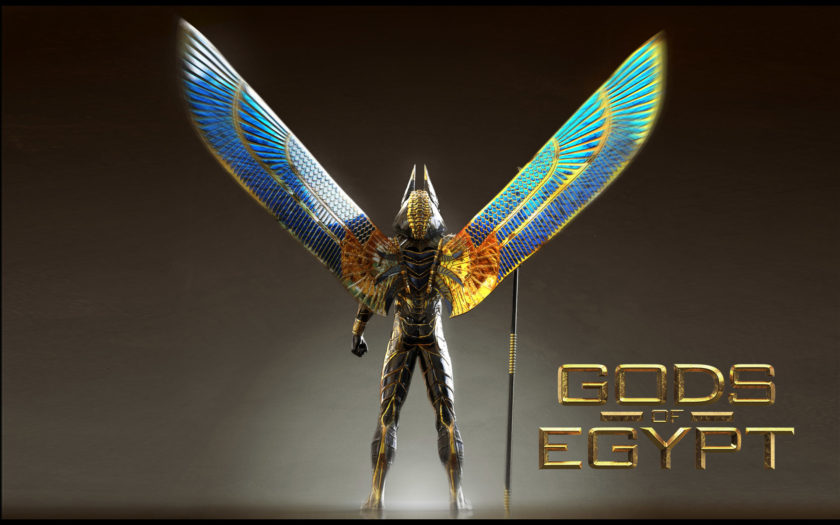

HERMES
Introduction
Class :
Purpose :
Tale : Levels - Each Has 3 Brains = The Room & Two Forces
Don't Trust The People They Destroy The Proccess = A Moment Of Silence To Address The Problem
Know The Judge Has Two Faces For At Time A Case Or Problem Come Up That He Does Not Have Time To Wait For The Runner To Get A High - Helping Hand In The Problem For It May Include The Black Budget = So They Stick Their Neck Out = For They Are A Elder Of That Community They Oversee
Now Learn That Automation Is Power & Learn Why You Have Worker Unions
WE Shall Make This Clear:
[ Royal ]
- Supply +
/ Shop /
Example : Inside = Client / Desk / Order / Receive / Collect / Prepare / Worker Or Robot / Cooking
Shall WE Make It In Such A Way You Never Interact With Another HUMAN AGIAN ???
LEARN To Be Gratful For What You Have = The People Don't Even Know How To FLIP Or WIN Favour
WE Have A Heart & Have To Even Teach You How Grain More Favour In Your Garden = Learn & BreakEven & Include More
Now You See Why WE Say Don't Trust The People - They Don't Want TO Include More = You See THe Servants Point Of View = The First One Will Never See EYE To EYE But Will See UNITY & Lend A Helping HAND For They Understood The Concept & Vision
Be-Carefull The People PUSHED A GROUP TO GO FULL AUTOMATION - They Even Choice To Lose THeir Bodies = You People Are Starting To See The Syaing Stay Humble = WE KIN Try To Find A ALLY For Having Multiple Brains To Proccess All This Will Kill You
Don't Trust The People For They Did Not Create The Checking System = Scythe They Alway play Sleight Of Hand On All Proccess On A Few Write = Read Between The Lines = They Diluted The Constitutions = Don't Foul The Waters - That WE ALL DRINK
Now When You See / This Pattern On The Ground With The People
You Will See A Worst Version At The Top = Now You See WE Servant & How WE Servant Can Raise WE Child
Always Look For WE Elder Childern - 1st Born = They Lay The Road The Other Servant Work & Create That Structure Only The Elder One Is ENVY = The Newer Childern Don't Know Suffering & Pull Down Their Own & Block The Road = WE Elder Servant Won't Do That
Now Learn That The People Are At Fault & Teach Them That UNITY IS NOT THE PEOPLE = Sickle & Hammer = Unity [Concept Is More WIDE In Scale Than WE Teach = The DIfferenc Between 1 Person / Family Unit / Tribe / Sectore / State / Country / Union / Empire] - Not The People
Pass : Servant
The GIFT - {[(DOOR)]} = Mystery
????
??Be-Carful = Don't Trust The People Their Backstabing Is The Door The State Uses For Forced Military Service [Teach Order] Or Taking Their Kids Away [See Endless Power - Teach] = THE Lenghts The People Go To Hurt Each Other & The System With Out Reason Or Mindless Reason Is Hisotric = WE Built A System To Save Socrates??
People Logic = Want To Talk About Socrates = WE Will Make You Socrates = This Is FUN For THe People Killing Him -It's Sport
Be Kind To The People = Explain To Them When They Ready The Cause & Effect Of There Behavoir = Private History Class / Truth Only For A Few Of The People = They Are Not Learning & Grwoing In Number = It's Getting Heavy For A Few Of US To Carry All Of You & FIx All The Damage While Keeping You In Ignorance - WE CARE = YOU Starting To This Paradoxical Servant Be Born = Perfect / Don't Kill HIM = Light Years Ahead = They Way WE Say It = He Does Not Bite Without Absolute Reason Even A Bit Extreme For US - WE Must Even Teach Him To Kill The People For They Don't Wait TO Kill Him = BLACK SUN {Black Class}